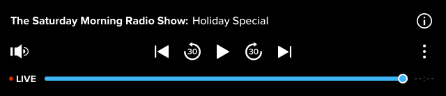

Before you can manage audio files, you must upload them.
Ooyala now provides a default Audio-Only Player in addition to the existing default Video
Player:

See the Audio-Only Player documentation section for more details
on uploading content for audio-only or audio-primary playback and using the default Audio
Player. For more informaiton about ingestion tailored for audio-only playback, see Audio-Only Player: Asset Processing.
To upload an
audio file:
-
Log in to the Backlot UI.
The Backlot UI opens.
-
Click ADD NEWCONTENT and select AUDIO.
-
In the Add Asset pop up window, select one or more files to upload and click Open.
-
In the Processing Profile drop down menu, select a processing profile. (This
step is optional, so you can leave the selection on Automatic processing if you
wish).
-
Once you click UPLOAD, the audio file(s) appear on the MANAGE page as Backlot begins processing. After Backlot completes, it changes the STATUS to LIVE.
-
Change the default name in the TITLE field and provide a description of the video in the DESCRIPTION field.